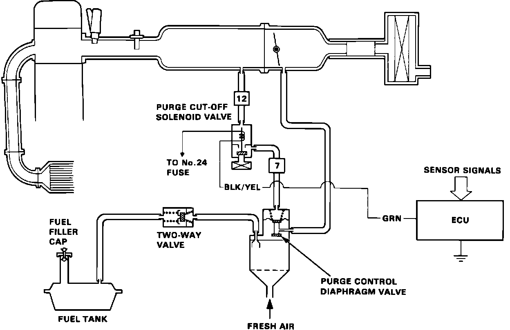

Evaporative Emissions System: Description and Operation
Fig. 32 Evaporative Emission Control System (EVAP):

The evaporative emission controls are designed to minimize the amount of fuel vapor escaping to the atmosphere. The system consists of the following components:
FUEL TANK VAPOR CONTROL SYSTEM
The Fuel Cut-Off Valve and Liquid Vapor Separator prohibit liquid fuel from entering the two-way valve. When fuel vapor pressure in the fuel tank is higher than the set value of the two-way valve, the valve opens and regulates the flow of fuel vapor to the canister. If the two-way valve should fail, the pressure (or vacuum) in the tank is vented through the filler cap.
CHARCOAL CANISTER
A canister for the temporary storage of fuel vapor until it can be cycled through the engine and burned.
VAPOR PURGE CONTROL SYSTEM
Canister purging is accomplished by drawing fresh air through the canister and into a port on the throttle body. The ported vacuum is controlled by the Purge control diaphragm valve and the Purge Cut-Off Solenoid Valve.
When the coolant temperature is above 73°C (163°F), the purge cut-off solenoid valve directs manifold vacuum to the purge control diaphragm valve 5 seconds after engine start. When the coolant temperature is below 55°C (131°F), the purge cut-off solenoid valve blocks manifold vacuum from the purge control valve.